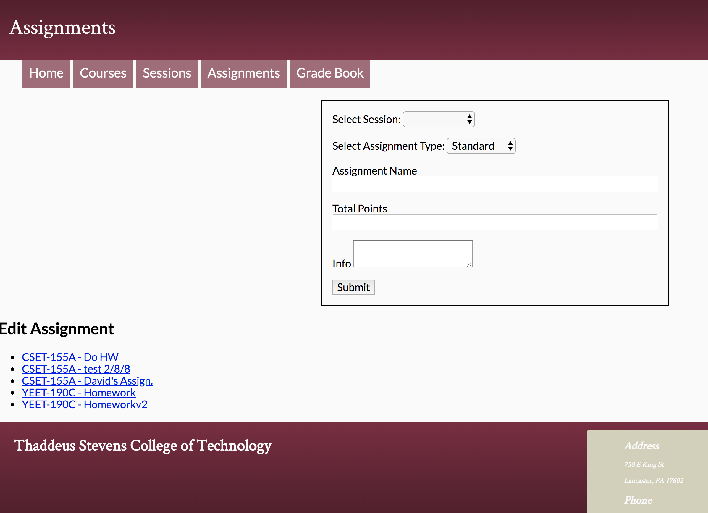

Back End programming is extremely rewarding, which is one of the many reasons I enjoy doing it so much. I prioritize careful planning, and efficiency when writing back end code and database structures. Below you can find a list of some of the skills I’ve acquired so far relating to Back End work.
Back End Skills
- PHP
- MySQL/PostgreSQL
- Java
- XAMPP
- Object Oriented Programming
- Python
- Flask Web framework
- Security best practices
- Jest/Pytest/Selenium
- Database Design and Implementation
Back End Project Highlight
Take a look
Recreation of Thaddeus Stevens College portal web app.
See More of my Projects